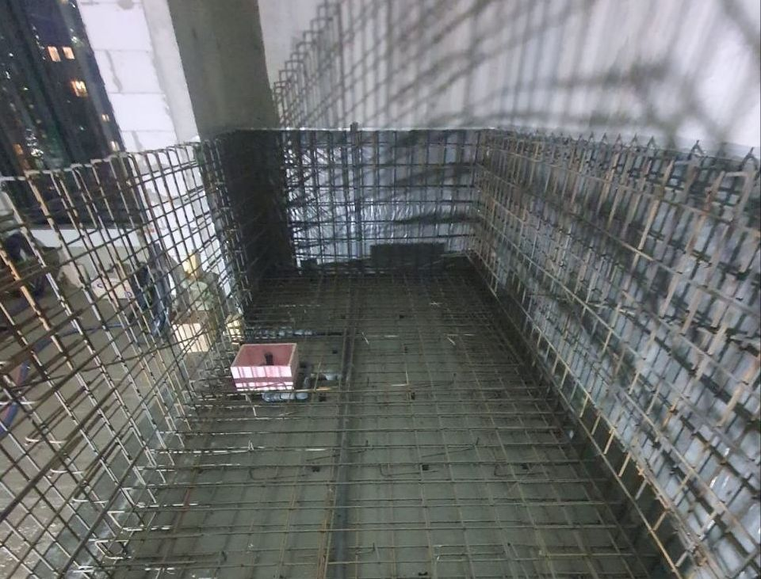

Введение
Сроки зависят от решений до начала работ
Сроки строительства бассейна нельзя рассматривать отдельно от проекта. Это не просто монтаж чаши, а комплексная инженерная система, где связаны между собой участок, грунты, конструкция, оборудование, гидроизоляция, фильтрация, подогрев и отделка. Любое изменение на одном этапе автоматически влияет на весь график работ.
Поэтому вопрос «сколько строится бассейн под ключ» корректно решать только после проектирования и формирования сметы. Именно на этом этапе определяется реальная длительность работ, последовательность этапов и ответственность каждого участника процесса.
Существенную роль играет и сценарий использования. Бассейн для круглогодичной эксплуатации, уличный сезонный объект, купель у бани или спортивная зона — всё это разные инженерные решения. От них зависят размеры чаши, глубина, тип фильтрации, мощность оборудования, система подогрева и требования к вентиляции и обслуживанию.
В формате полного цикла мы сначала фиксируем задачу, затем разрабатываем техническое решение, считаем стоимость, формируем график работ и только после этого переходим к строительству. Такой подход позволяет избежать переделок и заранее понимать реальные сроки реализации.
Отдельно важно учитывать скрытые этапы: армирование, бетонная чаша, закладные элементы, гидроизоляция и техническое помещение. Именно они не видны после завершения работ, но определяют долговечность бассейна, стабильность работы оборудования и удобство обслуживания.
Главная цель планирования — убрать неопределённость до начала стройки. Это позволяет заранее увидеть риски, избежать задержек и получить предсказуемый результат по срокам, бюджету и качеству.
Ниже приведены ключевые моменты, которые помогают правильно оценить сроки и подготовиться к строительству без лишних ошибок.

Практика
На что обратить внимание перед следующим этапом
Перед тем как переходить к строительству, важно убедиться, что все ключевые решения уже зафиксированы и понятны. На практике большинство проблем возникает не из-за стройки, а из-за того, что важные детали не были согласованы заранее.
Проверьте, что в проекте уже четко определены: размеры и форма чаши, отметки по глубине, расположение оборудования, схема фильтрации, требования к электрике, гидроизоляции, обслуживанию и безопасности. Всё это должно быть закреплено документально, а не обсуждаться «на месте».
Для удобства весь проект лучше разделить на две части:
- Обязательная инженерия — то, что отвечает за надежность: конструкция чаши, гидроизоляция, фильтрация, водоподготовка и доступ к обслуживанию.
- Комфорт и опции — то, что влияет на удобство: подсветка, автоматика, противоток, водопады, подогрев, декоративные элементы.
Такой подход помогает не раздувать бюджет и сохранять главное — надежную работу системы. Сначала проектируют основу, затем добавляют комфорт там, где это действительно нужно.
Отдельно стоит подумать о будущем обслуживании. Бассейн — это не разовый объект, а система, которая требует ухода: фильтры, химия, насосы, сезонные запуски и консервация.
Чем лучше продуманы доступ к оборудованию и схема управления, тем проще и дешевле будет эксплуатация. В итоге бассейн не превращается в сложный технический объект, а остается удобной частью дома.
Календарный план
Типовой путь от идеи до запуска бассейна
| Этап | Срок | Что важно учесть | Рекомендация АЛ Пулс |
|---|---|---|---|
| Техническое задание и консультация | от нескольких дней до 1 недели | Формирование идеи, анализ участка, понимание сценария использования (семья, отдых, спорт, круглогодичный режим) | Собрать максимум вводных: размеры участка, фото, ограничения по доступу техники, пожелания по стилю и бюджету |
| Проектирование | 1–4 недели | Разработка конструкции, гидравлики, электрики и технического помещения. Формирование полной инженерной логики | Не упрощать проект — именно здесь закладывается надежность, тишина работы и удобство обслуживания |
| Строительство чаши | 3–8 недель | Земляные работы, армирование, бетон, установка закладных элементов, набор прочности конструкции | Не менять размеры и узлы в процессе — любые изменения увеличивают сроки и стоимость |
| Гидроизоляция и отделка | 3–8 недель | Защита чаши от протечек, укладка отделочных материалов, проверка герметичности системы | Обязательно проводить испытания чаши перед финишной отделкой и учитывать время на технологические паузы |
| Запуск и настройка | 2–7 дней | Запуск оборудования, настройка фильтрации, проверка химии воды, тест всех систем | Провести обучение владельца: обслуживание, контроль воды, сезонные режимы и базовая эксплуатация |
Причины задержек
Что реально влияет на сроки
Проектные изменения
Перенос лестницы, изменение глубины или добавление противотока меняют конструкцию и гидравлику.
Поставка оборудования
Насосы, фильтры, автоматика, подогрев и подсветка должны быть заказаны заранее.
Погода и грунты
Дожди, высокий уровень воды и сложный подъезд влияют на земляные и бетонные работы.
Отделка
Мозаика, переливной лоток и сложные радиусы требуют точной подготовки и времени.
Сроки строительства бассейна нужно фиксировать не одной датой, а графиком с контрольными точками: готовность проекта, завершение чаши, испытания, монтаж оборудования, отделка и запуск.
Как ускорить
Что заказчик может сделать заранее, чтобы ускорить строительство
Сроки строительства бассейна чаще всего зависят не от самой стройки, а от того, насколько хорошо подготовлен проект и площадка до начала работ. Чем больше решений принято заранее, тем быстрее и спокойнее проходит реализация.
01. Утвердить концепцию до сметы
Сразу определить основные параметры: размер и форму чаши, тип бассейна, систему фильтрации, подогрев и сезонность использования. Это помогает зафиксировать бюджет и исключить переделки на этапе проектирования.
02. Подготовить строительную площадку
Обеспечить свободный доступ техники, место для складирования материалов и возможность подключения временного электропитания. Хорошая подготовка участка экономит недели на этапе строительства.
03. Согласовать материалы и оборудование заранее
Отделка, оборудование и автоматика должны быть выбраны до начала скрытых работ. Это исключает паузы в строительстве и позволяет не менять уже выполненные инженерные решения.
04. Назначить одного ответственного за проект
Когда есть один человек, принимающий решения, процесс идет быстрее: меньше согласований, меньше простоев и меньше ошибок между подрядчиками.
Важно понимать: ускорять можно только организационные процессы, но не физику материалов. Бетон должен набрать прочность, гидроизоляция — пройти испытания, а основания — полностью высохнуть. Эти этапы нельзя сокращать без риска для долговечности бассейна.
Частые ошибки
Что создаёт ложные ожидания при строительстве бассейна
Большинство разочарований в сроках, бюджете и результате появляется не из-за самой стройки, а из-за неправильных ожиданий на старте. Когда этапы не согласованы заранее, бассейн начинает «жить своей жизнью» — с задержками, переделками и ростом стоимости.
-
Ориентир только на рекламные сроки
Часто называют «строительство за 2–3 месяца», но не учитывают проектирование, поставки оборудования, технологические паузы и сезонность работ.
Как правильно: оценивать сроки только после готового проекта и сметы, где учтены все этапы. -
Начало земляных работ без выбора оборудования
Если не определены закладные элементы, фильтрация и схема оборудования, на стройке почти всегда появляются переделки.
Как правильно: оборудование и гидравлика должны быть зафиксированы до котлована. -
Отсутствие времени на испытания и исправления
После гидроизоляции и монтажа всегда требуется проверка и корректировки. Если их не заложить в график, ошибки переходят в эксплуатацию.
Как правильно: предусматривать отдельный этап тестирования системы. -
Проектирование ландшафта отдельно от бассейна
Без привязки к отметкам чаши возникают перепады уровней, неудобные подходы и проблемы с дренажем.
Как правильно: ландшафт и бассейн проектируются вместе как единая система. -
Ранний «запуск» без настройки системы
Многие считают бассейн готовым после наполнения водой, но без настройки фильтрации и водоподготовки система не стабилизируется.
Как правильно: запуск — это не финал стройки, а этап настройки и стабилизации воды.
Реалистичный подход к планированию позволяет избежать лишних расходов, переделок и сдвигов сроков. Бассейн — это не разовая стройка, а инженерная система, которая должна быть заранее продумана как единое целое.
Планирование сезона
Как подготовить календарь без срыва запуска
Если бассейн нужен к конкретной дате, планируйте проектирование заранее. Самая частая ошибка — обращаться к подрядчику весной с ожиданием, что сложный бетонный бассейн будет полностью готов к началу лета. На практике требуется время на техническое задание, чертежи, комплектацию, котлован, бетон, набор прочности, гидроизоляцию, отделку, монтаж оборудования и пусконаладку. Каждый этап имеет зависимости, которые нельзя просто сжать без риска.
Сроки нужно обсуждать вместе с решениями по дому и участку. Террасы, подпорные стены, ландшафт, дренаж, электрика и водоснабжение могут влиять на доступ к чаше и техническому помещению. Если эти работы выполняют разные подрядчики, нужен общий график и ответственный координатор. Иначе одна бригада ждёт другую, а запуск бассейна переносится из-за мелких, но критичных несогласованностей.
Реалистичный календарь включает резерв. Он нужен на погоду, поставки оборудования, проверку гидроизоляции, корректировку отделки и балансировку воды после заполнения. Резерв не означает плохую организацию; наоборот, он показывает профессиональный подход к объекту, где важны качество, безопасность и долгий срок службы.
Дополнительно оцените эксплуатацию через год и через пять лет. Бассейн должен быть понятен не только в день запуска: владельцу важно знать, как промывать фильтр, где перекрываются контуры, как работает автоматика, какие реагенты нужны, как выполнять сезонный запуск и когда вызывать сервис. Если эти вопросы обсуждаются до строительства, объект получается спокойнее в эксплуатации, а обслуживание не превращается в набор срочных вызовов.
Отдельное внимание уделите документам. В договоре и приложениях должны быть указаны этапы работ, порядок оплаты, гарантийные условия, спецификация оборудования, ответственность за скрытые работы и правила приёмки. Документы не заменяют доверие, но помогают сохранить договорённости, когда проект длится несколько недель или месяцев и в нём участвуют разные специалисты.
Наконец, не забывайте о безопасности. Для частного бассейна важны нескользкие поверхности, удобные ступени, продуманная глубина, безопасная электрика, защита оборудования, возможность укрытия и правильная химия воды. Эти детали редко выглядят эффектно в рекламных визуализациях, но именно они определяют комфорт семьи и гостей каждый день.
SEO-блок: сроки под ключ
Как снять возражения по календарю
Запрос «сколько строится бассейн под ключ» обычно связан с опасением, что стройка затянется и испортит сезон. Честный ответ должен объяснять, какие этапы можно планировать параллельно, а какие идут строго последовательно. Например, комплектацию оборудования можно готовить во время строительных работ, но испытания гидроизоляции нельзя заменить визуальным осмотром.
Клиенту важно видеть контрольные точки. Первая — утверждение проекта и сметы. Вторая — готовность котлована и основания. Третья — завершение чаши и закладных. Четвёртая — герметичность и монтаж оборудования. Пятая — отделка, заполнение, баланс воды и обучение владельца. Такой график превращает абстрактный срок в управляемый процесс.
Если подрядчик обещает очень быстрый запуск без объяснения технологии, стоит уточнить, какие этапы исключены. Иногда речь идёт не о строительстве под ключ, а о частичном монтаже без отделки, автоматики, пусконаладки или сервиса. Сравнивайте не дни в рекламе, а полный путь до безопасной эксплуатации.
При принятии решения полезно смотреть на три горизонта. Первый горизонт — стартовые затраты и сроки. Второй — удобство эксплуатации в первый сезон, когда владелец учится управлять фильтрацией, химией воды и укрытием. Третий — состояние объекта через несколько лет: насколько просто заменить оборудование, обновить отделку, выполнить ремонт, модернизировать автоматику или изменить сценарий использования.
Ещё один критерий — прозрачность ответственности. Если разные подрядчики отвечают за котлован, чашу, оборудование, электрику, отделку и обслуживание, на стыках легко возникают спорные ситуации. Формат под ключ ценен тем, что один исполнитель видит систему целиком и заранее предупреждает, где решение одного раздела влияет на другой.
АЛ Пулс подходит к бассейну как к инженерно-архитектурному объекту. Мы учитываем эстетику, конструкцию, водоподготовку, безопасность, сервис и стоимость владения. Такой подход особенно важен для частных домов, где бассейн должен не просто выглядеть эффектно на визуализации, а ежедневно работать спокойно, понятно и надёжно.
Итоговая проверка
Что зафиксировать перед решением
Дополнительно оцените, насколько выбранный подход соответствует вашему дому, участку, бюджету и ожиданиям семьи. Чем раньше эти критерии обсуждены с подрядчиком, тем проще сохранить сроки, смету и качество результата, а также заранее определить ответственного за быстрые согласования на каждом этапе проекта.
Перед выбором решения попросите подрядчика показать итоговую логику: какие задачи закрывает проект, какие работы входят в договор, какие материалы и оборудование используются, какие сроки считаются технологическими, какие платежи привязаны к этапам и кто отвечает за сервис после запуска. Такой набор вопросов помогает отделить профессиональное предложение от приблизительной оценки.
Также полезно заранее обсудить возможные изменения. В реальном проекте заказчик может захотеть другую отделку, дополнительную подсветку, укрытие, подогрев или автоматизацию. Если порядок изменений понятен заранее, каждая новая опция оценивается спокойно: по влиянию на цену, сроки, инженерные разделы и обслуживание. Это делает сотрудничество прозрачным и снижает риск конфликтов.
Финальный ориентир прост: хороший бассейн должен быть красивым, безопасным, ремонтопригодным и понятным в эксплуатации. Если предложение отвечает только на вопрос «сколько стоит сейчас», но не объясняет, как объект будет работать дальше, его стоит доработать до полноценного решения под ключ.
FAQ
Частые вопросы
Сколько строится бассейн под ключ?
Бетонный бассейн обычно требует нескольких месяцев с учётом проекта, чаши, технологических пауз, гидроизоляции, отделки и запуска.
Можно ли ускорить строительство?
Можно ускорить согласования, комплектацию и подготовку площадки, но нельзя безопасно отменить технологические паузы бетона и гидроизоляции.
Что чаще всего задерживает объект?
Поздний выбор оборудования и отделки, изменения проекта, неподготовленная электрика, сложные грунты и отсутствие ответственного координатора.
Когда лучше начинать проектирование?
Оптимально до активного строительного сезона или параллельно с проектированием дома и ландшафта.
Расчет
Получить расчет стоимости
Подготовим ориентир бюджета, состав работ и инженерные решения под ваш участок, дом и желаемый формат эксплуатации.